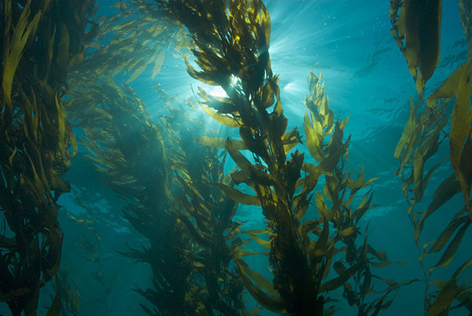

Marine plants grow near the surface of salt water and ice, within reach of sunlight necessary for photosynthesis. Photosynthesis is a process used by plants and other organisms to convert light energy into chemical energy that can later be released to fuel the organisms' activities.
Algae, the most plentiful type of marine plant, form the foundation of the food chain and crucial to a balanced ecosystem. These marine plants have provided fundamental nourishment in the food chain. No marine animals would have evolved or been able to survive if marine plants had not existed.
Nutrients are also gathered from particles that currents wash up from sea floors. Marine plants can adapt to specific conditions, such as limited light and underwater caves.